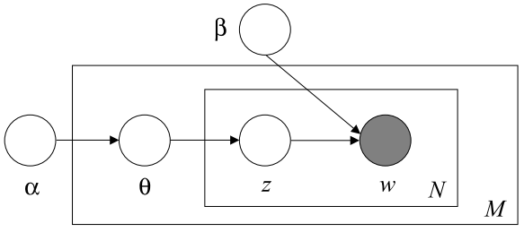

LDA模型入门
1 引子
本文是对Blei等人LDA原始论文的总结。给定大量的文档，如何在无标注的情况下确定每个文档的主题词？LDA(Latent Dirichlet Allocation)是这类主题确定问题的一个成熟的解决方案。LDA最初面向文本挖掘领域，但随后在图像分类、行为识别等领域也得到了应用。LDA是一种典型的非监督模型，模型仅需要输入文档集合的词袋模型，模型可输出每个文档对应的主题，每个主题使用关键词的分布来表示。
2 模型定义

LDA的PGM形式如上，我们认为主题数目有K个，文档有M个， 每个文档中有N个词。其中，\(\alpha\) 是Dirichlet分布的参数，大小为1xK，用于控制生成主题的聚集程度； \(\theta\) 表示一个文档中主题的分布大小为1xK；\(z\)为一个为每个词安排主题的01随机变量，大小为1xK，且只有一个值为1；\(\beta\)为一个多项分布的集合，大小为KxV，其中每一行代表一个主题中，不同词出现的概率；而w代表每个文档中的一个词。
沿着上面的PGM的箭头方向，可以总结出词的生成过程。我们已知了每个文档中的词袋模型\(w\)，为了找到一组合适的主题，需要对分布 \(p(w\vert\alpha,\beta)\) 进行推理。由于该分部中蕴含了隐变量主题\(\theta\) ，所以积分将\(\theta\)积掉。代入Dirichlet分布\(p(\theta\vert\alpha)\)，多项分布\(p(z_n\vert\theta)\)，以及一个单独的概率值\(p(w_n\vert z_n,\beta)\)，可得参数的后验概率形式。以下为完整的推导： $$p(w|\alpha,\beta) = \int p(\theta|\alpha)\prod_{n=1}^N p(w|\theta, \beta) d\theta$$ $$= \int p(\theta|\alpha) (\prod_{n=1}^N \sum_{z_n}p(z_n|\theta)p(w_n|z_n,\beta))$$ $$ = \frac{\Gamma(\sum_i\alpha_i)}{\prod_i{\Gamma(\alpha_i)}}\int(\prod_{i=1}^k\theta_i^{\alpha_i-1})(\prod_{n=1}^N\sum_{i=1}^k\prod_{j=1}^V(\theta_i\beta_{ij})^{w_n^j})d\theta$$
模型的两个关键参数可以通过多种方法进行求解，即模型训练。
3 模型训练
3.1 变分推理
Blei最初的LDA论文中，使用了变分推理（VB）求解LDA参数。这种方法试图使用一个不受约束的变分分布近似LDA的模型的联合概率。类似的手段可以参见Laplace近似，最经典的应用为使用高斯分布近似Bayesian Logistic Regression中观测的后验分布\(p(w\vert\bf{t})\)。VB个人理解为一种链式的迭代估计框架。使用一个Q函数去近似真实分布函数。
3.2 Gibbs Sampling
优势是便于编程实现。
3.3 比较
变分推理的计算快于基于采样的方法，但可能会收敛到局部最优解。Matthew、Blei等人对于LDA在线学习中对变分推理进行了改进。采样方法更为直观、易于工程实现，且在多数场景下，采样的最终性能会好于变分推理。